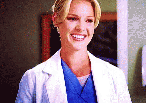

Quem ela é?
Izzie Stevens é um frequentar oncologista cirúrgico . Ela era uma residente cirúrgica no Seattle Grace Hospital até ser demitida logo após a fusão com o Mercy West Medical Center. Noivada com Denny Duquette até sua morte, ela agora está em um relacionamento com seu ex-marido, Alex Karev . Juntos, eles têm gêmeos, Alexis e Eli.
Infância
Izzie cresceu em Forest Park, na Route 6, atrás de uma igreja em Chehalis, Washington. Ela morava em um trailer com
sua mãe, que a apelidou de "Cricket". Quando adolescente, Izzie trabalhou como garçonete e tinha economias para a
faculdade, mas sua mãe gastou a maior parte do dinheiro economizado com médiuns. Isso obrigou Izzie a pagar a maior
parte das contas com seu próprio dinheiro. Aos 15 anos, Izzie engravidou. Ela deu à luz uma menina e deu-a para adoção
aos 16 anos para lhe dar uma vida melhor. Ela secretamente chamou a menina de Sarah, mas seus pais adotivos a chamaram
de Hannah. Por causa de sua gravidez, as mães faziam seus filhos ficarem longe de Izzie, então ela se esforçava para
fazer amigos.
Em seu baile de formatura, o quarterback do futebol foi seu par. Como a escola dela não tinha muito dinheiro, eles apenas
converteram o ginásio.
Quando ela completou 18 anos, ela saiu de casa. Ela pagou a faculdade de medicina com a designer de modelos "Bethany
Whisper", o que a levou a receber o apelido de "Dra. Modelo". Ela frequentou a Escola de Medicina da Universidade de
Washington.
Personalidade
Izzie sempre acha que há algo de bom nas pessoas, não importa o quão ruins elas sejam. Suas motivações são sempre para
o que ela acredita ser a coisa certa. Ela é muito otimista, alegre e brilhante. A primeira impressão que ela dá é de
uma mulher confiante e amigável.

Ela também é muito gentil, protetora e freqüentemente teimosa.
Ela parece ficar muito envolvida emocionalmente na maioria dos casos, o que ela vê como uma coisa boa, embora outros achem
que isso atrapalha o medicamento. Izzie é muito leal a todos os seus amigos e, na maioria dos casos, é confiável. Ela gosta
de ver os outros felizes e está constantemente tentando animá-los. Essa atitude, entretanto, não se estende a determinados
indivíduos. Por exemplo, ela sai do seu caminho sempre que tem chance de menosprezar e derrubar George e Callie depois
que eles fugiram, acabando por romper completamente o casamento dormindo com George. Durante todo o tempo em que conheceu
Callie, Izzie agiu como uma pessoa infantil e inadequada; constantemente rindo dela e zombando de detalhes íntimos sobre a
vida de Callie que ela só queria que George soubesse. Ela também é uma romântica incurável. Ela cozinha/limpa muito, quase
a um nível obsessivo, quando está triste ou estressada.
Izzie muitas vezes pode ser considerada uma intrometida quando tenta ajudar as pessoas quando elas não necessariamente
pedem ajuda. Ela pode realmente causar dor se acreditar que foi injustiçada ou ferida emocionalmente. Ela pode guardar
rancor ou retaliar quando alguém tenta tirar vantagem de sua bondade e boas intenções.